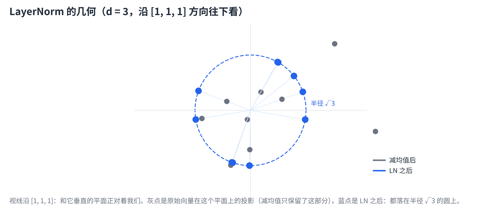
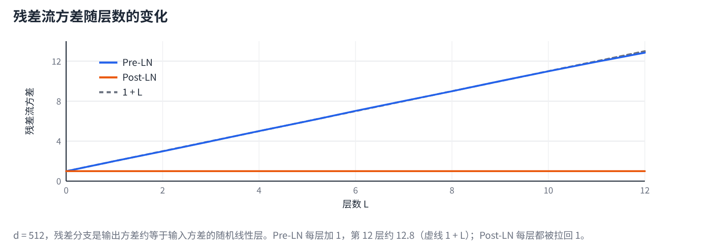
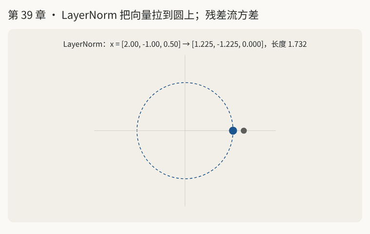

第 39 章 · 归一化与信号传播：LayerNorm / RMSNorm 的几何、不变性、梯度，Pre-LN 与 Post-LN
本地运行
git clone https://github.com/wikieden/math-and-eval-stats
cd math-and-eval-stats/code/notebooks
pip install jupyterlab torch numpy
jupyter lab ch39_normalization.ipynb也可以下载后直接用 VS Code 打开 .ipynb 运行。需要 GPU 的章节在 Colab 里选「代码执行程序 → 更改运行时类型 → GPU」。
本章回答：LayerNorm 在几何上做了什么？RMSNorm 少了一步，丢掉了什么？归一化的梯度有什么结构？为什么现在的大模型几乎都用 Pre-LN，残差流的大小又为什么会随层数越来越大？
讲解日期：2026-11-25 · 上一章：第 38 章 位置编码的数学 · 下一章：第 40 章 张量的数学
对应原文：LayerNormtransformer-deep-dive/materials/text/papers/layernorm-1607.06450.txt；RMSNormtransformer-deep-dive/materials/text/papers/rmsnorm-1910.07467.txt（重新居中 vs 重新缩放的不变性 L18–L50）；On Layer Normalization in the Transformer Architecture（Pre-LN）transformer-deep-dive/materials/text/papers/preln-on-layer-normalization-2002.04745.txt（Theorem 1：Post-LN 最后一层梯度 O(d√ln d)、Pre-LN O(d√(ln d / L))，L338–L352）
本章缩写：LN = Layer Normalization（层归一化）；RMS = Root Mean Square（均方根）；RMSNorm = 用 RMS 归一化；Pre-LN / Post-LN = 归一化放在残差分支之前 / 残差相加之后；F = 残差分支（注意力或 MLP）；L = 层数；d = 隐藏维度。全部缩写见 附录 · 缩写与术语表
讲解
第一步：LayerNorm 的几何：投影 + 拉到固定半径（2026-11-25）
类比：把一组考试分数换成"比平均高几个标准差"。 不管原来满分是 100 还是 150、整体偏高还是偏低，换完以后都在同一个尺度上。
（再乘 γ、加 β，这里先不管）两步各有几何意义：
- 减均值 = 投影到和 𝟙 = [1, …, 1] 垂直的超平面（分量和为 0）；
- 除以 σ = 拉到这个超平面上半径 √d 的球面（\(\|\text{LN}(x)\|^2 = d\)）。
例子：x = [2, 4, 6, 8] → LN(x) = [−1.3416, −0.4472, 0.4472, 1.3416]：分量和 0，长度 2 = √4。
RMSNorm：不减均值，只除以 RMS：\(x/\sqrt{\frac1d\sum x_i^2}\)。RMSNorm(x) = [0.3651, 0.7303, 1.0954, 1.4606]，长度也是 2，但不在“和为 0”的超平面上。

图 39-1 · d = 3，视线沿 [1, 1, 1]，和它垂直的平面正对着我们：灰点是 10 个随机向量减均值后的位置（都在这个平面上），蓝点是 LN 之后（都落在半径 √3 的圆上）一句话：LayerNorm = 投影到“和为 0”的超平面 + 拉到半径 √d 的球面；RMSNorm 只做后一步（拉到半径 √d 的球面，但不投影）。
第二步：不变性：归一化之后，前面的哪些变化被“看不见”了（2026-11-25）
| 平移 x + c𝟙 | 整体缩放 αx | |
|---|---|---|
| LayerNorm | 不变 | 不变 |
| RMSNorm | 会变 | 不变 |
例子：LN(3x + 5) = [−1.3416, −0.4472, 0.4472, 1.3416]，和 LN(x) 一样；RMSNorm(3x) 和 RMSNorm(x) 一样，但 RMSNorm(x + 5) = [0.6831, 0.8783, 1.0735, 1.2687]，变了。
RMSNorm 论文（L18–L50）的论点：LayerNorm 成功主要靠缩放不变性（让训练不受权重尺度影响），重新居中贡献不大；去掉减均值省一次归约，速度快 7%–64%。Llama、Qwen 等现代 LLM 都用 RMSNorm。
一句话：LN 对平移和缩放都不变，RMSNorm 只对缩放不变；实践中缩放不变性是关键，所以 RMSNorm 够用而且更快。
第三步：归一化的梯度：去掉“看不见”的方向（2026-11-25）
既然 LN 对“沿 𝟙 平移”和“沿 x 缩放”不变，损失对这两个方向的导数就是 0：梯度自动和它们正交（和第 36 章 BatchNorm 是同一个式子，只是在特征维而不是 batch 维上算）：
例子（x = [2, 4, 6, 8]，上游梯度 [1, −2, 0.5, 3]）：∂L/∂x = [0.7379, −0.9839, −0.246, 0.4919]；分量和 −1.1 × 10⁻¹⁶，和 y 的内积 2.5 × 10⁻¹⁶（都是 0）。
后果：LN 之前那一层的权重 W 整体放大，输出不变、梯度变小（σ 在分母）：权重越大有效学习率越小，这是一种自稳定机制，也是 weight decay 在有归一化的网络里主要起“调有效学习率”作用的原因。
一句话：LN 的梯度投影掉了 𝟙 和 y 两个方向，并除以 σ；前面权重越大，有效步长越小。
第四步：Pre-LN 与 Post-LN：残差流的大小（2026-11-25）
Post-LN（原版 Transformer）：\(x_{l+1} = \text{LN}(x_l + F(x_l))\)。Pre-LN（GPT-2 以后几乎所有模型）：\(x_{l+1} = x_l + F(\text{LN}(x_l))\)。
例子（d = 512，残差分支 F 是随机线性层、输出方差约等于输入方差，看残差流每个分量的方差）：
| 层 | 1 | 4 | 8 | 12 |
|---|---|---|---|---|
| Pre-LN | 2.0 | 5.0 | 8.99 | 12.84 |
| Post-LN | 1.0 | 1.0 | 1.0 | 1.0 |
Pre-LN 每层把一个方差约 1 的东西加到残差流上，方差约 1 + L 线性增长；Post-LN 每层都被拉回 1。

图 39-2 · 横轴层数，纵轴残差流方差；Pre-LN（蓝）沿 1 + L 直线增长，Post-LN（橙）恒为 1梯度（Pre-LN 论文 Theorem 1，L338–L352）：初始化时，Post-LN 最后一层参数的梯度是 O(d√ln d)，和层数无关、偏大；Pre-LN 是 O(d√(ln d / L))，随层数变小。所以 Post-LN 必须先用很小的学习率预热（warmup），否则一开始就发散；Pre-LN 可以不预热、训得更稳。代价：Pre-LN 后面的层对残差流的相对贡献越来越小（残差流越来越大），深层的“有效深度”打折扣，这是 DeepNet、各种残差缩放方法想补的。
场景代码：Pre-LN 的 Transformer 块（PyTorch 写法，示意结构；本书环境没装 torch，没跑过）：
class Block(nn.Module):
def forward(self, x):
x = x + self.attn(self.norm1(x)) # Pre-LN：先归一化再进分支，残差路径上没有 LN
x = x + self.mlp(self.norm2(x))
return x # 整个网络最后再加一个 final_norm
一句话：Post-LN 每层归一化、残差流稳定但梯度大、需要预热；Pre-LN 残差路径干净、梯度随层数缩小、训得稳，代价是残差流方差约 1 + L 增长。
动画演示：一个向量被 LayerNorm 拉到圆上

可交互版：animations/39-normalization.html（下拉切换“LayerNorm / RMSNorm / 残差流”；滑块调平移量、缩放量或层数）。
怎么看：
- LayerNorm：d = 3，视线沿 [1, 1, 1]（和图 39-1 一样）；灰点是输入在平面上的投影，蓝点是 LN 输出，落在半径 √3 的虚线圆上；拖平移 c 两个点都不动，拖缩放 α 只有灰点沿半径移动（第一、二步）；
- RMSNorm：拖平移 c 时蓝点会移动（不减均值，平移改变输出），拖缩放时不动（第二步）；
- 残差流：两条线是 Pre-LN 和 Post-LN 的方差随层数变化（第四步）。
练习与作答记录
题 1（第一步）：x = [1, 1, 1, 5]，算 LN(x) 和 RMSNorm(x)。各自的长度是多少？
作答：（待作答）
题 2（第二步）：说出一个 RMSNorm 和 LayerNorm 输出相同的条件。
作答：（待作答）
题 3（第四步）：Pre-LN 的残差分支输出方差改成 0.1（比如残差分支的最后一层乘了一个小系数），24 层后残差流的方差大约是多少？
作答：（待作答）
口诀
LayerNorm 先投影再拉到半径根号 d；
LN 平移缩放都不变，RMSNorm 只管缩放、少一步更快；
梯度投影掉看不见的方向，权重越大步子越小；
Post-LN 每层拉回、梯度大要预热；
Pre-LN 残差干净、方差一加加到 1 加 L。
本章复习卡片
ST130（LayerNorm 的几何、RMSNorm 少了什么）、ST131（归一化的不变性与梯度结构）、ST132（Pre-LN vs Post-LN：残差流方差、梯度、预热）。练习做完后，按答错、卡住的地方补上。
附录 · 延伸阅读
留给以后深入学习用，不影响本章主线。★ 是建议先读的。
推荐阅读
| 读什么 | 读哪里 | 读它为了什么 |
|---|---|---|
| ★ Pre-LN 论文（Xiong 2020） | §3（Theorem 1，L338–L352）、§3.4 实验 | 为什么 Post-LN 需要预热 |
| ★ RMSNorm（Zhang & Sennrich 2019） | §1–3（L18–L50） | 去掉重新居中的理由 |
| ★ 《从零读懂 Transformer》第 19 章 LayerNorm | 全章 | 直觉版和动画 |
| LayerNorm（Ba 2016） | §3、§5（不变性分析） | 原始定义和不变性表 |
| 第 36 章 CNN 训练的数学 | 第四、五步 | BatchNorm 的梯度、残差的梯度流 |
数学原理
- 投影矩阵：减均值 = \((I - \frac1d\mathbf 1\mathbf 1^\top)x\)，对称幂等。
- 长度：\(\|x - \bar x\mathbf 1\|^2 = d\sigma^2\) ⇒ \(\|\text{LN}(x)\|^2 = d\)。
- 不变性 ⇒ 梯度正交：若 f(x + c𝟙) = f(x) 对所有 c 成立，对 c 求导得 ∇f·𝟙 = 0；缩放不变同理得 ∇f·x = 0。
- Pre-LN 方差累加：x_{l+1} = x_l + F_l，F_l 和 x_l 近似不相关时 Var 相加。
公式清单
| 公式 | 意思 |
|---|---|
| \(\text{LN}(x) = (x - \bar x)/\sigma\) | LayerNorm（不含 γ、β） |
| \(\text{RMSNorm}(x) = x/\text{RMS}(x)\) | RMSNorm |
| \(\|\text{LN}(x)\| = \sqrt d\) | 半径 |
| \(\partial L/\partial x = (g - \bar g - y\,\overline{gy})/\sigma\) | LN 的梯度 |
| Pre-LN：\(x + F(\text{LN}(x))\)；Post-LN：\(\text{LN}(x + F(x))\) | 两种放法 |
代码对照：把本章的数字用代码算一遍
代码在仓库本地
math-and-eval-stats/solutions/chapter-code/ch39_normalization.py，配套测试tests/test_ch39.py：
bash cd math-and-eval-stats/solutions/chapter-code uv run python ch39_normalization.py uv run pytest tests/test_ch39.py
讲义 ↔ 代码：
| 讲义 | 公式 | 写法 | 跑出来 |
|---|---|---|---|
| 第一步 几何 | 减均值、除 σ | layernorm(X)、rmsnorm(X) |
长度都是 2 |
| 第二步 不变性 | 平移、缩放 | layernorm(3 * X + 5) |
不变 |
| 第三步 梯度 | 投影 | ln_grad(X, g) |
Σ = 0、⊥ y |
| 第四步 残差流 | Pre / Post | residual_variance(12, mode) |
12.84 vs 1.0 |
关键几行：
(x - m) / np.sqrt(((x - m) ** 2).mean(-1, keepdims=True) + eps) # LayerNorm
x / np.sqrt((x ** 2).mean(-1, keepdims=True) + eps) # RMSNorm
x = x + layernorm(x) @ w if mode == "pre" else layernorm(x + x @ w) # Pre-LN / Post-LN
代码里才看得到的 3 件事：
- eps 默认取 0：为了让“长度正好 √d”“梯度和精确正交”这些性质在数值上成立；真实实现里 eps ≈ 1e-5，防止 σ = 0。
- 残差分支用 1/√d 的随机矩阵：保证 F 的输出方差约等于输入方差（第 36 章的初始化），所以 Pre-LN 每层正好加 1。
- 没有算梯度范数：“Pre-LN / Post-LN 12 层的梯度范数对比”留给自己做（里程碑 ME-M24）。
自己改一改（不影响练习答案）：
- 在 Post-LN 版本里把
layernorm换成rmsnorm，方差还是 1 吗？ - 给 Pre-LN 的残差分支乘 1/√(2L)（GPT-2 的做法），看 12 层后的方差。